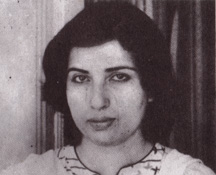

  
<body bgcolor="#FFFFFF">
<div align="center">
  <table width="450" border="0">
    <tr> 
      <td><font face="Arial, Helvetica, sans-serif" size="3"><b>TANVIR ANJUM</b> 
        has a doctorate in linguistics from the University of Texas and teaches 
        English in Karachi. Her first collection of poems<i>, An-Dekhi Lahren,</i> 
        came out in 1982. </font></td>
    </tr>
  </table>
  <br>
  <table width="108" border="0">
    <tr>
      <td width="41%"></td>
      <td width="55%"></td>
      <td width="4%"></td>
    </tr>
  </table>
</div>
